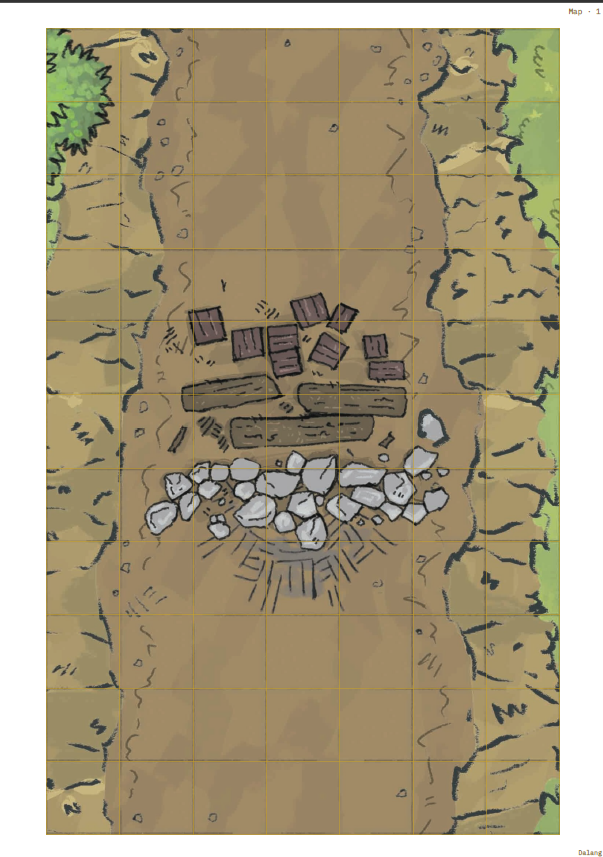
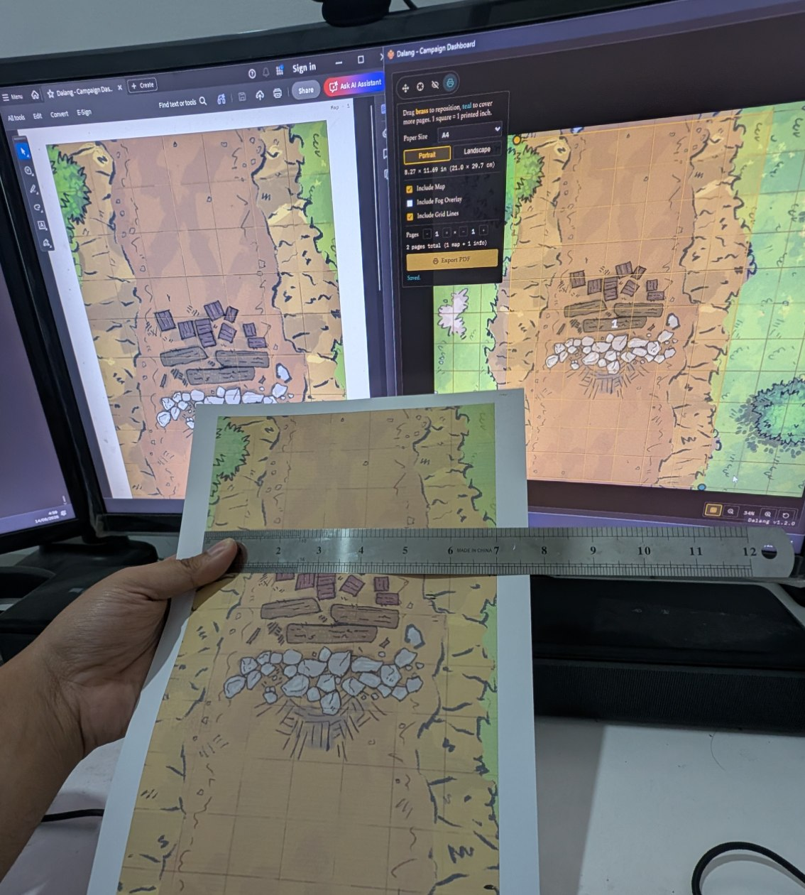
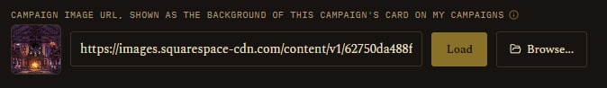

Download
Get the App · Download
Download Dalang
Free to download, pay what you want.
Older versions
Previous releases, kept for reference:
Version history
v1.2.0
New features
- Print your map for an offline session, no laptop needed at the table. A fourth Print mode in the map popup (alongside Pan & View/Calibrate Grid/Fog of War): position a page overlay, pick a paper size (Letter/A4/Legal/Tabloid/A3) and orientation, choose whether to include the map art, grid lines, and a separate fog overlay sheet, then export a multi-page PDF at exactly 1 grid square = 1 physical inch, derived from the map's own calibration. See Setting Up a Map.
- Share your campaign prep with your players, so they show up ready. The new Player Guide export (Campaign Settings → Build Player Guide) lets you pick which Story sections, Locations, NPCs, and Quests players can see, preview the result live, then export it as one standalone file, HTML (opens in any browser, no app needed) or PDF. Layout choice of Long Scroll or Tabbed, per-field toggles for what shows on each card, an optional Author/DM name byline, and an option to include an NPC's linked monster Stat Block. DM Notes, Encounters, Treasure, Maps, and NPC Goal/Secret are never included, not gated by a toggle, this export simply doesn't read those fields. PDF export adds a clickable Table of Contents, always keeps cross-reference links working regardless of Layout, fully expands stat blocks and tab panels, always starts each chapter on its own printed page, and has an optional Print-friendly (white background) palette. See Player Guide.
- Added 2024 SRD content (SRD 5.2.1) alongside the existing 2014 data (SRD 5.1) for Monsters, Spells, Conditions, and Weapon Properties. Both editions show together in the Compendium, tagged so you always know which one you're looking at, with a source filter to narrow to just one edition. The reference data is compiled and cross-checked in-house against multiple sources and the official text, rather than vendored from a single third-party source. Equipment and Magic Items are still 2014 only for now, matching item variants cleanly between editions needs its own pass, same for Rules, Rule Sections, Damage Types, Skills, Languages, Ability Scores, and Magic Schools. See SRD 2014 vs. 2024.


Improvements & fixes
- Fixed popups closing if a drag started inside them (like selecting text in a textarea) and released outside, any popup in the app, not just one.
- The main window can no longer be resized smaller than 1000×650, keeps the layout from breaking at very small window sizes.
v1.1.0
New features
- Every image field in the app, NPC portrait, Player portrait, Location image, Campaign card image, DM-level background, SRD and Homebrew monster portraits, can now Browse to a file on your own computer instead of only pasting a hosted URL, with a live preview next to the field either way. (It's a desktop app. Of course it can read a file off your own disk. Silly me.) See Campaign Prep.
- Monster portraits can now be added or changed directly from the Battle Map, click a token, Edit Portrait, right above its stat block. No more leaving a live encounter for Compendium just to fix a picture for a monster pulled off a random table mid-session. Works for SRD and homebrew monsters alike. See Running a Live Session.

Improvements & fixes
- Fixed the Player Window's dice roll banner never animating on a broadcast roll, a fresh roll and one still sitting on screen from before looked identical. It now tumbles once per new roll.
- Fixed the Player Window's dice roll card blending into busy map backgrounds, it now sits on a solid backing like the other overlays on that screen.
- The Player Window now has its own distinct title ("Dalang - Player Window"), separate from the main window, fixing tools like OBS's Window Capture picker listing two identical, indistinguishable entries.
- Fixed the sidebar's tab list clipping on a short window, tabs past the visible height (like Settings) were unreachable. Only the tab list scrolls now, the campaign header and "Back to My Campaigns" footer stay fixed in place.
- Every native file dialog (image Browse, plus every export/import picker) now shows the Dalang icon in its title bar instead of the generic Electron one.
- Fixed the installer and taskbar icon looking blurry at large sizes (Windows Explorer's Extra Large icons view on a high-DPI screen), it only had image data up to 256px, a proper 512px version is included now.
v1.0.0
- Renamed to Dalang - Campaign Dashboard, formerly just Campaign Dashboard.
- NPCs can now be linked to a Compendium monster (SRD or homebrew) for real combat stats, including a Species column on the roster and a Stat Block section on the NPC sheet. See NPC.
- Added a way to import a character straight from a D&D Beyond character URL. See Players.
- Focus Mode now has its own turn controls (order list, Round, Roll Initiative, Next Turn), and the Player Window shows a matching turn order panel to players. See Running a Live Session and The Player Window.
- The Combatants list can add/remove a condition and toggle hide-from-players directly on the row now, no need to open the full token popup.
- Added a global dice roller (Ctrl+D or the header Roll button): a click-to-build pool, Advantage/Disadvantage, a custom formula input, session-only history, and a "visible to players" toggle that broadcasts a roll to the Player Window. See Dice Roller.
- DM Settings gets a Background Image field, shown behind My Campaigns and the Library. See Getting Started.
- Added an in-app Legal & Sources page. See Legal & Sources.
- The Active Campaign view and the Player Window's idle screen now fall back to the campaign's own background image when the current location has none, instead of going flat.
- Pressing Escape now cancels whatever confirm dialog is open, anywhere in the app.
v0.7.2
- The Story tab now supports your own custom sections, for anything beyond the built-in Campaign Pitch, World Lore, and Factions/Villains fields. Give it a title, an optional subtitle, and write as much as you need, it expands and collapses like the built-in sections and remembers its state.
v0.7.1
- NPCs can now have a portrait, with a live preview on the NPC sheet and a thumbnail on the NPC table, matching Players and Locations. It shows up on that NPC's token on the map too.
- Monsters, Spells, Equipment, and Magic Items tables now have pagination (10/15/30/100 rows per page).
- Starting turn order now warns if anyone's still missing an initiative roll instead of starting the fight silently.
- Editing a Player, Location, or NPC's portrait/image URL now shows a live preview right next to the field, and editing an SRD monster's portrait no longer opens a separate popup, it expands inline in the stat block instead.
v0.7.0
- Added a homebrew compendium: your own Monsters, Magic Items, and Equipment, shown alongside the official rules content and usable anywhere a monster can be. See Compendium.
- Homebrew content now travels with exported Campaigns and Adventures, and can also be exported/imported on its own.
- Compendium gained a sortable table view, source filters (official vs. homebrew), and a portrait field for SRD monsters.